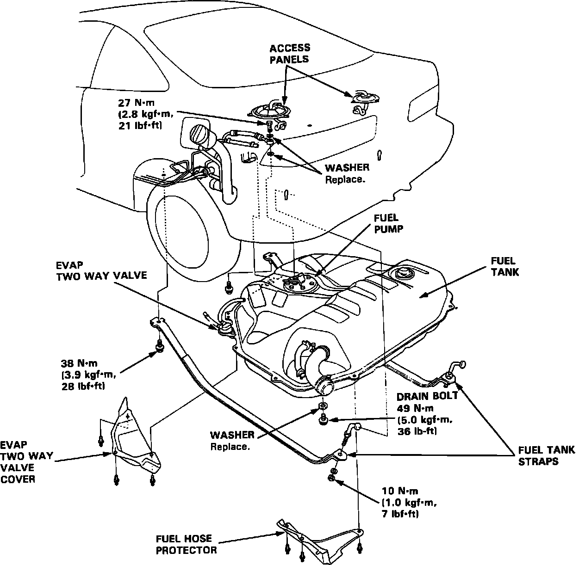

Fuel Tank: Service and Repair
Fuel Tank:

WARNING: Do not smoke while working on the fuel system. Keep open flame away from work area. Relieve system fuel pressure by loosening the fuel filter service bolt. Be sure to tighten the service bolt before turning on the ignition.
1. Block front wheels. Jack up the rear of the car and support with jackstands.
2. Remove the tank drain bolt and drain the fuel into an approved container.
3. Remove the rear seat and both access panels, disconnect 2P and 3P connectors.
4. Remove the two-way valve, it's cover and the fuel hose protector.
5. Disconnect any hoses attached to the tank noting the proper routing and attachment points of each hose.
CAUTION: When disconnecting the hoses, slide back the clamps, then twist hoses as you pull, to avoid damaging them. Clean the flared joint of high pressure hoses thoroughly before reconnecting them.
6. Place a jack or other support, under the tank.
7. Remove the tank strap nuts and let the straps fall free.
8. Remove the Fuel Tank.
CAUTION: The fuel tank may stick on the undercoating that is applied to it's mounting area. To remove the tank, carefully pry it off the mount.
9. Install a new washer on the drain bolt. Torque the drain bolt to: 50 Nm (36 lb-ft)
10. Reinstall fuel tank straps and torque the strap nuts to: 22 Nm (16 lb-ft)
11. Reinstall all other parts in reverse order of removal.
12. Check for leaks after fuel has been returned into the fuel tank.